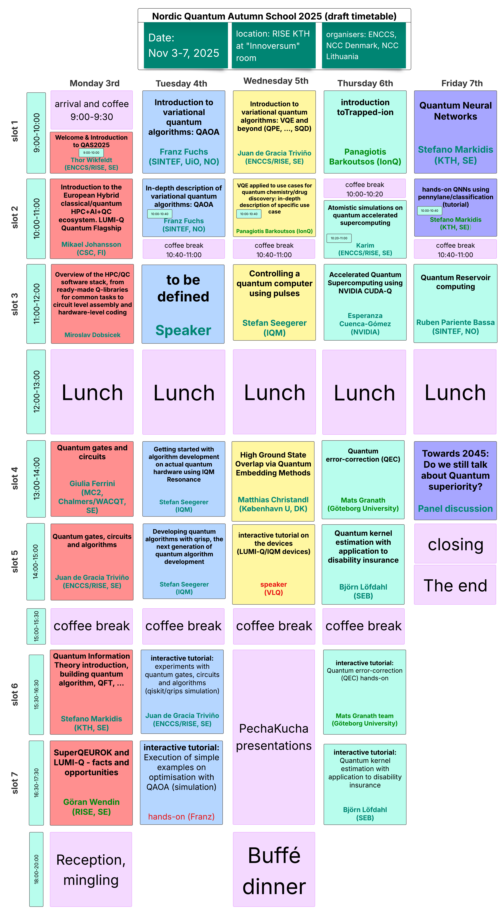
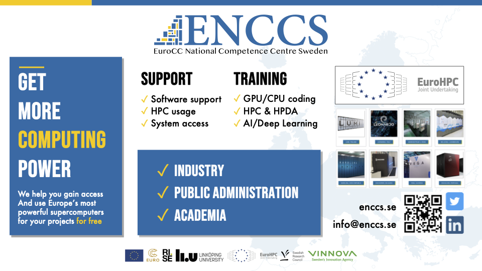

Quantum Autumn School 2025
Welcome to QAS2025!
Join us for an intensive week of quantum computing education, featuring hands-on tutorials, expert lectures, and European quantum hardware.
📅 November 3-7, 2025 | 📍 RISE KTH “Innoversum” room, Stockholm, Sweden

About the School
The Quantum Autumn School 2025 (QAS2025) brings together researchers, students, and industry professionals to explore cutting-edge developments in quantum computing. This 5-day event offers a unique combination of theoretical foundations and practical experience emphasising the integration with High Performance Computing, featuring expert-led sessions that cover a range of topics from theoretical foundations to practical applications. Expect a blend of lectures, hands-on exercises, and networking opportunities, including the chance to interact with stakeholders involved with the EuroHPC JU quantum computers. It will provide a valuable opportunity to explore the latest advancements in quantum computing, where you’ll learn about up-to-date topics and European quantum efforts, especially in light of the eight EuroHPC JU quantum computers announcements, and get hands-on experience.
Nordic Quantum Autumn School 2025 - Schedule
Nordic Quantum Autumn School 2025 - Schedule
Note
Date: November 3-7, 2025
Location: RISE KTH at “Innoversum” room
Organizers: ENCCS, NCC Denmark, NCC Lithuania
Overview
The Nordic Quantum Autumn School 2025 is a 5-day intensive program covering quantum computing fundamentals, variational quantum algorithms, and hands-on experience with quantum hardware and simulators.
Daily Schedule
Monday, November 3rd
| Time | Session |
|---|---|
| 9:00-9:30 | Arrival and Coffee |
| 9:00-10:00 | Welcome & Introduction to QAS2025 Thor Wikfeldt (ENCCS/RISE, SE) |
| 10:00-10:40 | Introduction to the European Hybrid classical/quantum HPC+AI+QC ecosystem. LUMI-Q Quantum Flagship Mikael Johansson (CSC, FI) |
| 10:40-11:00 | Coffee Break |
| 11:00-12:00 | Overview of the HPC/QC software stack, from ready-made Q-libraries for common tasks to circuit level assembly and hardware-level coding Miroslav Dobsicek (Chalmers Next Labs, SE) |
| 12:00-13:00 | Lunch |
| 13:00-14:00 | Quantum gates and circuits Giulia Ferrini (MC2, Chalmers/WACQT, SE) |
| 14:00-15:00 | Quantum gates, circuits and algorithms Giulia Ferrini, Laura Garcia Alvarez (MC2, Chalmers/WACQT, SE) |
| 15:00-15:30 | Coffee Break |
| 15:30-16:30 | Quantum Information Theory introduction, building quantum algorithm, QFT, ... Stefano Markidis (KTH, SE) |
| 16:30-17:30 | Quantum error mitigation (QEM) applied to simulation of physical systems Göran Wendin (RISE, SE) |
| 18:00-20:00 | Reception, mingling |
Tuesday, November 4th
| Time | Session |
|---|---|
| 9:00-10:00 | Introduction to variational quantum algorithms: QAOA Franz Fuchs (SINTEF, UiO, NO) |
| 10:00-10:40 | In-depth description of variational quantum algorithms: QAOA Franz Fuchs (SINTEF, NO) |
| 10:40-11:00 | Coffee Break |
| 11:00-12:00 | Integrating quantum processing units with supercomputers Speaker |
| 12:00-13:00 | Lunch |
| 13:00-14:00 | Getting started with algorithm development on actual quantum hardware using IQM Resonance Stefan Seegerer (IQM) |
| 14:00-15:00 | Developing quantum algorithms with qrisp, the next generation of quantum algorithm development Stefan Seegerer (IQM) |
| 15:00-15:30 | Coffee Break |
| 15:30-16:30 | Interactive tutorial: experiments with quantum gates, circuits and algorithms (qiskit simulation) Tutorial, simulation (Laura) |
| 16:30-17:30 | Interactive tutorial: Execution of simple examples on optimization with QAOA (simulation) Hands-on (Franz) |
Wednesday, November 5th
| Time | Session |
|---|---|
| 9:00-10:00 | Introduction to variational quantum algorithms: VQE and beyond (QPE, ..., SQD) Juan (ENCCS, RISE, SE) |
| 10:00-10:40 | VQE applied to use cases for quantum chemistry/drug discovery: in-depth description of specific use case Panagiotis Barkoutsos (IonQ) |
| 10:40-11:00 | Coffee Break |
| 11:00-12:00 | High Ground State Overlap via Quantum Embedding Methods Matthias Christandl (København U, DK) |
| 12:00-13:00 | Lunch |
| 13:00-14:00 | Controlling a quantum computer using pulses Stefan Seegerer (IQM) |
| 14:00-15:00 | Interactive tutorial on the devices (LUMI-Q/IQM devices) Stefan Seegerer (IQM) |
| 15:00-15:30 | Coffee Break |
| 15:30-16:30 | Interactive tutorial: Execution of simple quantum chemistry examples using VQE on simulation vs. LUMI-Q/IQM Hands-on (IQM team/Panos) |
| 16:30-17:30 | Buffé dinner |
Thursday, November 6th
| Time | Session |
|---|---|
| 9:00-10:00 | Introduction to Trapped-ion Panagiotis Barkoutsos (IonQ) |
| 10:00-10:40 | Atomistic simulations on quantum accelerated supercomputing Karim (ENCCS/RISE, SE) |
| 10:40-11:00 | Coffee Break |
| 11:00-12:00 | Accelerated Quantum Supercomputing using NVIDIA CUDA-Q Esperanza Cuenca-Gómez |
| 12:00-13:00 | Lunch |
| 13:00-14:00 | Quantum error-correction (QEC) Mats Granath (Göteborg University) |
| 14:00-15:00 | Quantum monte carlo and quantum finance Björn Löfdahl (SEB) |
| 15:00-15:30 | Coffee Break |
| 15:30-16:30 | Interactive tutorial: Quantum finance, Classical Monte Carlo on a QC, Quantum Amplitude Estimation (QAE) Björn Löfdahl & team |
| 16:30-17:30 | Quantum Reservoir computing Ruben Pariente Bassa (SINTEF, NO) |
| 17:30-18:00 | PechaKucha presentations and posters |
| 18:00-20:00 | Buffé dinner |
Friday, November 7th
| Time | Session |
|---|---|
| 9:00-10:00 | Quantum Neural Networks (lecture) Stefano Markidis (KTH, SE) |
| 10:00-10:40 | Hands-on QNNs using pennylane/classification (tutorial) Stefano Markidis (KTH, SE) |
| 10:40-11:00 | Coffee Break |
| 11:00-12:00 | Interactive tutorial: Quantum error-correction (QEC) hands-on Mats Granath team (Göteborg University) |
| 12:00-13:00 | Lunch |
| 13:00-14:00 | Towards 2045: Do we still talk about Quantum superiority? Panel discussion |
| 14:00-15:00 | Closing - The end |
This schedule is subject to change. Please check for updates regularly.
Day 1 - Monday, November 3rd
Learning Track: Basics - Quantum computing fundamentals, Tools and QC-access Software & algorithms, Elementary exercises
Arrival and Coffee
Time: 9:00-9:30
Welcome setup and registration for participants arriving at RISE KTH “Innoversum” room.
Welcome & Introduction to QAS2025
Speaker: Thor Wikfeldt (ENCCS/RISE, SE)
Time: 9:00-10:00
Welcome to the Nordic Quantum Autumn School 2025! This opening session will introduce participants to the school’s objectives, structure, and learning outcomes. We’ll provide an overview of the five-day program, introduce the instructors, and set expectations for the intensive quantum computing education ahead.
Introduction to the European HPC+AI+QC ecosystem. LUMI-Q Quantum Flagship
Speaker: Mikael Johansson (CSC, FI)
Time: 10:00-10:40
This session provides a comprehensive overview of the European landscape for hybrid classical/quantum high-performance computing. We’ll explore the LUMI-Q Quantum Flagship initiative and discuss how quantum computing is being integrated into the broader European HPC and AI ecosystem. Participants will learn about current infrastructure, future developments, and opportunities for accessing quantum resources.
Coffee Break
Time: 10:40-11:00
Overview of the HPC/QC software stack, from ready-made Q-libraries for common tasks to circuit level assembly and hardware-level
Speaker: Miroslav Dobsicek Time: 11:00-12:00
A technical deep-dive into the software ecosystem that connects classical high-performance computing with quantum computing. This session covers the full stack from ready-made quantum libraries for common tasks down to circuit-level assembly and hardware-level programming. We’ll discuss how quantum algorithms integrate with classical computing workflows and the tools available for hybrid quantum-classical computing.
Lunch
Time: 12:00-13:00
Quantum gates and circuits
Speaker: Giulia Ferrini (MC2, Chalmers/WACQT, SE)
Time: 13:00-14:00
Introduction to the fundamental building blocks of quantum computing. This session covers basic quantum gates, how they manipulate qubits, and how gates are combined to create quantum circuits. We’ll explore single-qubit and two-qubit gates, quantum circuit notation, and the principles of quantum circuit design.
Quantum gates, circuits and algorithms
Speakers: Giulia Ferrini, Laura Garcia Alvarez (MC2, Chalmers/WACQT, SE)
Time: 14:00-15:00
Building on the previous session, we’ll explore how quantum circuits are used to implement quantum algorithms. This session bridges the gap between basic gate operations and practical quantum algorithms, showing how circuit design principles apply to real quantum computing problems.
Coffee Break
Time: 15:00-15:30
Quantum Information Theory introduction, building quantum algorithm, QFT, …
Speaker: Stefano Markidis (KTH, SE)
Time: 15:30-16:30
An introduction to the theoretical foundations of quantum information processing. This session covers key concepts including quantum superposition, entanglement, and quantum measurements. We’ll discuss the Quantum Fourier Transform (QFT) and other fundamental quantum algorithms, providing the theoretical background needed for advanced quantum computing applications.
SuperQEUROK and LUMI-Q - facts and opportunities
Speaker: Göran Wendin (RISE, SE)
Time: 16:30-17:30
Current quantum computers are noisy intermediate-scale quantum (NISQ) devices that require error mitigation strategies. This session introduces quantum error mitigation techniques applied to simulation of physical systems. We’ll cover practical approaches to reducing the impact of quantum noise and improving the reliability of quantum computations.
Reception & Mingling
Time: 18:00-20:00
Welcome reception and networking event for all participants and instructors.
Day 2 - Tuesday, November 4th
Learning Track: Basic/Intermediate - Optimization of logistics and QAOA use cases
Introduction to variational quantum algorithms: QAOA
Speaker: Franz Fuchs (SINTEF, UiO, NO)
Time: 9:00-10:00
Introduction to the Quantum Approximate Optimization Algorithm (QAOA), one of the most promising near-term quantum algorithms. This session covers the theoretical foundations of QAOA, its applications to combinatorial optimization problems, and why it’s particularly suited for NISQ devices.
In-depth description of variational quantum algorithms: QAOA
Speaker: Franz Fuchs (SINTEF, UiO, NO)
Time: 10:00-10:40
A detailed exploration of QAOA implementation and optimization strategies. We’ll dive deep into parameter optimization, circuit design considerations, and practical aspects of running QAOA on real quantum hardware. This session includes discussion of QAOA performance on different problem types and hardware architectures.
Coffee Break
Time: 10:40-11:00
(placeholder)Integrating quantum processing units with supercomputers
Speaker: EuroHPC Speaker
Time: 11:00-12:00
Exploration of how quantum processing units (QPUs) are integrated with classical supercomputing infrastructure. This session covers the technical challenges and solutions for creating hybrid quantum-classical computing systems, including communication protocols, job scheduling, and resource management.
Lunch
Time: 12:00-13:00
Getting started with algorithm development on actual quantum hardware using IQM Resonance
Speaker: Stefan Seegerer (IQM)
Time: 11:00-12:00
In this session you will be learning how to execute quantum circuits on actual hardware with IQM’s cloud-accessible Resonance platform. You will not only run your first experiments but also acquire tips and tricks on how to get the most out of the hardware.
Developing Quantum Algorithms with qrisp—the Next Generation of Quantum Algorithm Development
Speaker: Stefan Seegerer (IQM)
Time: 13:00-14:00
This hands-on session introduces qrisp’s high-level, Pythonic workflow that converts mathematical intent directly into resource-optimized quantum circuits. Participants will prototype variational and fault-tolerant routines, run it on simulators and real hardware and experience first hand how qrisp empowers you to develop novel quantum algorithms.
Coffee Break
Time: 15:00-15:30
tutorial, simulation (Laura)
Speaker: Laura (Tutorial, simulation)
Time: 15:30-16:30
Interactive tutorial on implementing quantum gates, circuits and algorithms using Qiskit simulation. This comprehensive session provides hands-on experience with quantum programming, covering circuit construction, simulation, and algorithm implementation using IBM’s quantum development framework.
interactive tutorial: Execution of simple optimization examples with QAOA (simulation)
Speaker: Franz (Hands-on)
Time: 16:30-17:30
Practical tutorial on executing simple optimization examples using QAOA simulation. This hands-on session provides direct experience with implementing and running QAOA algorithms, focusing on parameter optimization techniques and performance analysis for combinatorial optimization problems.
Day 3 - Wednesday, November 5th
Learning Track: Intermediate - Variational algorithms, Molecules, VQE use cases
Introduction to variational quantum algorithms: VQE and beyond (OPE, …, SQD)
Speaker: Juan (ENCCS, RISE, SE)
Time: 9:00-10:00
Comprehensive overview of Variational Quantum Eigensolvers (VQE) and related algorithms including Quantum Phase Estimation (QPE) and quantum simulation methods. This session covers the theoretical foundations of variational quantum algorithms and their applications to quantum chemistry and materials science.
VQE applied to use cases for quantum chemistry/drug discovery with description of specific use cases
Speaker: Panagiotis Barkoutsos (IonQ)
Time: 10:00-10:40
Deep dive into practical applications of VQE for quantum chemistry and drug discovery. This session presents specific use cases, discusses the advantages of quantum approaches over classical methods, and explores current limitations and future prospects for quantum-enhanced molecular simulation.
Coffee Break
Time: 10:40-11:00
High Ground State Overlap via Quantum Embedding Methods
Speaker: Matthias Christandl (København U, DK)
Time: 11:00-12:00
Advanced techniques for achieving high ground state overlap using quantum embedding methods. This session covers sophisticated approaches to quantum simulation of complex systems by embedding them in larger quantum systems, with applications to condensed matter physics and quantum chemistry.
Lunch
Time: 12:00-13:00
Excursion Session: Controlling a Quantum Computer Using Pulses
Speaker: Stefan Seegerer (IQM)
Time: 13:00-14:00
Leave the gate model behind and dive into the microwave layer where quantum logic is born. Through interactive demos you’ll be gaining an intuitive feel for how precise analog signals steer digital-era quantum computation.
Interactive tutorial on the devices (LUMI-Q/IQM devices)
Speaker: Stefan Seegerer (IQM)
Time: 14:00-15:00
Interactive tutorial providing direct experience with LUMI-Q quantum simulator and IQM quantum devices. Participants will learn to submit jobs, monitor execution, and retrieve results from these quantum computing platforms. This practical session bridges theory and application.
Coffee Break
Time: 15:00-15:30
Interactive tutorial: Execution of simple quantum chemistry simulation VQE vs LUMI-Q/IQM
Speakers: IQM team/Panos (Hands-on)
Time: 15:30-16:30
Advanced tutorial comparing VQE implementation on quantum simulators versus real LUMI-Q/IQM quantum hardware. Participants will execute quantum chemistry examples and analyze the differences between simulated and real quantum computations.
Buffé Dinner
Time: 16:30-17:30
Special dinner event for all participants and instructors.
Day 4 - Thursday, November 6th
Learning Track: Intermediate/Advanced - Advanced use cases: Physics, Chemistry, Materials, Health, Finance, Logistics
introduction to trapped-ion
Speaker: Panagiotis Barkoutsos (IonQ)
Time: 9:00-10:00
Introduction to trapped-ion quantum computing technology, one of the leading modalities for quantum computation. This session covers the principles of trapped-ion systems, their advantages and challenges, and current applications in quantum computing research and development.
Atomistic simulations on quantum accelerated supercomputing using NVIDIA CUDA-Q
Speaker: Karim Elgammal (ENCCS/RISE, SE)
Time: 10:00-10:40
An overview on Applications of quantum computing to atomistic simulations and materials science. This session explores how quantum algorithms can enhance Density Functional Calculations (DFT) electronic structure calculations, with practical examples from materials research.
Coffee Break
Time: 10:40-11:00
Accelerated Quantum Supercomputing using NVIDIA CUDA-Q
Speaker: Esperanza Cuenca-Gómez (NVIDIA) Time: 11:00-12:00
GPU-accelerated workloads are increasingly being adopted in heterogeneous quantum-classical architectures. These workloads are used to speed up algorithm run time, to test and implement future parallel QPU workflows, to scale up the size of quantum research, and to deploy workflows where QPUs and GPUs are tightly coupled. This session explains NVIDIA’s vision of accelerated quantum supercomputing, introducing CUDA-Q as the platform for high-performance hybrid quantum-classical computing. Relevant works using CUDA-Q are presented. The session includes code examples on how to use CUDA-Q, including quantum kernels and hybrid quantum-classical applications. Attendees are encouraged to explore CUDA-Q and the resources provided after the session.
Lunch
Time: 12:00-13:00
Quantum error-correction (QEC)
Speaker: Mats Granath (Göteborg University)
Time: 13:00-14:00
Introduction to quantum error correction, essential for fault-tolerant quantum computing. This session covers the principles of quantum error correction codes, logical qubits, and the requirements for implementing QEC in practical quantum systems.
quantum monte carlo and quantum finance
Speaker: Björn Löfdahl (SEB)
Time: 14:00-15:00
Advanced applications of quantum computing to financial modeling, focusing on quantum Monte Carlo methods and their applications to risk assessment, option pricing, and portfolio optimization in the financial sector.
Coffee Break
Time: 15:00-15:30
Interactive tutorial: Quantum error-correction (QEC) hands-on
Speakers: Mats Granath team (Göteborg University)
Time: 15:30-16:30
Hands-on exploration of quantum computing applications in finance, focusing on Quantum Amplitude Estimation (QAE) and Classical Monte Carlo methods on quantum computers. This tutorial demonstrates practical financial modeling techniques using quantum algorithms.
Interactive tutorial: Quantum finance, Classical Monte Carlo on a QC, Quantum Amplitude Estimation (QAE)
Speakers: Björn Löfdahl & team
Time: 16:30-17:30
Introduction to quantum reservoir computing, a quantum machine learning paradigm that leverages the natural dynamics of quantum systems for computation. This session covers the theoretical foundations, potential advantages over classical reservoir computing, and current research directions in this emerging field.
PechaKucha Presentations
Time: 17:30-18:00
Short, dynamic presentations by participants sharing their research, projects, and fun projects. This interactive session provides a platform for networking and knowledge exchange.
Day 5 - Friday, November 7th
Learning Track: Advanced FTQC - HW/SW implementation of QEM and QEC, AI and QC
Quantum Neural Networks (lecture)
Speaker: Stefano Markidis (KTH, SE)
Time: 9:00-10:00
Theoretical foundations of Quantum Neural Networks (QNNs) and quantum machine learning. This lecture covers the principles of quantum-enhanced machine learning, potential quantum advantages, and the mathematical framework underlying quantum neural network architectures.
hands-on QNNs using pennylane for classification (tutorial)
Speaker: Stefano Markidis (KTH, SE)
Time: 10:00-10:40
Practical tutorial on implementing Quantum Neural Networks using PennyLane for classification tasks. Participants will gain hands-on experience with quantum machine learning workflows, from data preparation to model training and evaluation.
Coffee Break
Time: 10:40-11:00
Quantum Reservoir computing
Speaker: Ruben Pariente Bassa (SINTEF, NO)
Time: 11:00-12:00
Hands-on implementation of quantum error correction codes. This tutorial provides practical experience with QEC protocols, error syndrome measurement, and error correction procedures using quantum simulators.
Lunch
Time: 12:00-13:00
Towards 2045: Do we still talk about Quantum superiority?
Format: Panel discussion
Time: 13:00-14:00
Forward-looking panel discussion examining the future of quantum computing through 2045. Experts will discuss the timeline for achieving quantum advantage across different application domains, remaining technical challenges, and the evolution of quantum supremacy to practical quantum advantage.
closing
Time: 14:00-15:00
Wrap-up session summarizing key learnings from the five-day intensive program. Participants will have the opportunity to share insights, discuss future applications of quantum computing in their work, and network with instructors and fellow participants.
Sessions are designed to accommodate multiple learning levels, from beginners to advanced practitioners.
What you will learn
QAS2025 will cover a broad range of topics that will give you a solid foundation in theoretical concepts and the practical know-how to get started with quantum computing in your domain. Starting from introductory lectures and basic tutorials at the first days of the school and building up to intermediate and advanced topics towards the end.
Introduction to quantum algorithms: Get a quick introduction on quantum computing, quantum information theory and learn how to develop a quantum algorithm. Understand the logic behind, and be able to programmatically create, quantum gates, circuits and algorithms such as QAOA and VQE with their different variations
Hands-on experience with a quantum computer: run computational workloads on real quantum hardware, with potential access to EuroHPC JU quantum device like LUMI-Q
European quantum initiatives: get an understanding and overview of the quantum computing ecosystem in Europe and globally, including key European quantum initiatives and talks by European hardware providers: IQM and Pasqal
Use cases: familiarise yourself with use cases in key domains such as optimisation, quantum chemistry and quantum finance. Learn about the exciting intersection between quantum computing and neural networks with overview on quantum reservoir computing
Quantum packages: use common quantum SDKs as Qiskit, Pennylane, learn about the European quantum algorithm development package Qrisp and how to accelerate quantum algorithms using QUDA-Q
Error correction: understand quantum error correction and the difference with quantum error mitigation
HPC & QC workflows: understand how to run hybrid HPC-QC workflows and accelerate quantum algorithms on GPUs.
Partners & Organizers
This school is organized by EuroCC competence centres of Sweden ENCCS in collaboration with EuroCC Denmark and EuroCC Lithuania. And supported by WACQT, a national research programme, coordinated from Chalmers, that aims to take Swedish research and industry to the forefront of quantum technology.

Registration & Logistics
Important
Capacity: Limited to ensure quality interaction
Format: In-person event in Stockholm with zoom link (to be distributed)
Venue
The Quantum Autumn School 2025 is going to be held at the RISE offices on KTH campus Drottning Kristinas väg 61 in room Innoversum. The closest metro station (marked T) is Tekniska Högskolan.
Accommodation
There are multiple hotels in the vicinity. Below you can find some hotels in order of proximity:
For more hotel options, visit the event page.
Public Transport
Download the public transport app to purchase tickets:
Ticket Options:
Single journey ticket
24-hour ticket
72-hour ticket
You can also use your regular credit card by scanning it on the metro and all buses. More information about contactless payments.
From Arlanda Airport:
Take a taxi
Arlanda Express - fast train (20 minutes to T-Centralen)
Flygbussarna - airport bus (approximately 45 minutes to T-Centralen)
About ENCCS

The EuroHPC Centre of Excellence in Computing Applications (ENCCS) develops and optimizes computational applications for current and upcoming exascale systems. We provide training, support, and expertise in high-performance computing and emerging technologies like quantum computing.
The lesson file structure and browsing layout is inspired by and derived from work by CodeRefinery licensed under the MIT license.